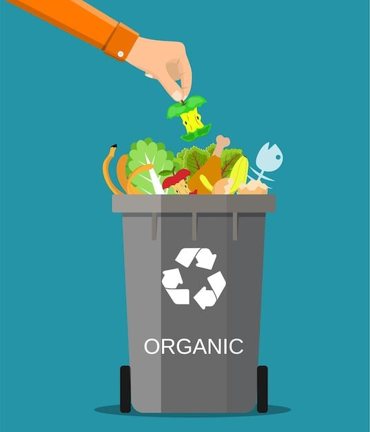
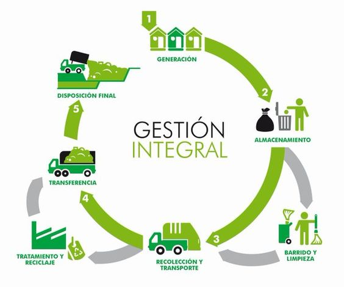

HISTORIA SOBRE LOS RECIDUOS

TIPOS DE RESIDUOS
Residuos domésticos: residuos generados en los hogares.
Residuos comerciales: residuos generados por la actividad propia del comercio.
Residuos industriales: residuos resultantes de los procesos de fabricación.

PLAN DE GESTIÓN
Dentro de la gestión global de los residuos generados, es importante clasificar los mismos. Existen distintas clasificaciones, en función de su origen, composición, peligrosidad, etc. De todas ellas es su clasificación legal según la Ley 22/2011.
PAÍSES MÁS CONTAMINANTES
República Democrática del Congo, Egipto, Nepal, Emiratos Árabes Unidos, Iraq, Bangladesh